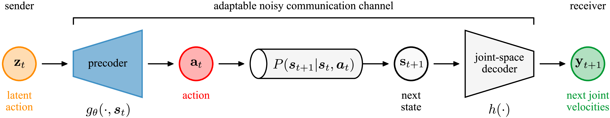
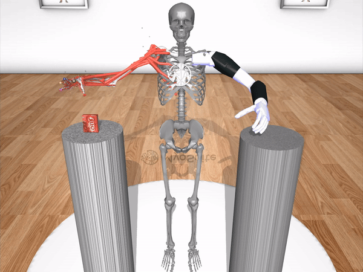

International Conference of Machine Learning (ICML) 2026
Spotlight Paper
Also presented at the
4th Workshop on Dexterous Manipulation: Scalable Learning for Human-Level Skills
Robotics: Science and Systems (RSS) 2026
Searching for effective policies is notoriously challenging in overactuated tendon-driven systems, where each joint is actuated by many muscles or motorized cables. Although this redundancy complicates naive policy search, it also implies that effective control can be captured by a low-dimensional action manifold. To identify such a manifold, we introduce Joint-Space Empowerment (JoSE), a novel information-theoretic objective that quantifies how much control an agent has over its mechanical degrees of freedom. We frame manifold discovery as an optimal precoding problem—where a state-dependent precoder maps low-dimensional latent actions to high-dimensional actions—and derive its closed-form solution under learned control-affine Gaussian dynamics. Across both a musculoskeletal hand model and a tendon-driven robotic hand, we show that policies trained on this manifold achieve significantly enhanced dexterity, sample efficiency, and improved generalization. More broadly, these results present optimal precoding as a general information-theoretic paradigm for coordinating high-dimensional actuators to control low-dimensional features.
In overactuated tendon-driven hands—those with more actuators (muscles or motors) than degrees of freedom—many actions produce the same joint motion. As a result, a low-dimensional action manifold capable of realizing all possible joint motions should exist. Our goal is to discover this manifold.
We parameterize a manifold as a state-dependent precoder that maps a low-dimensional latent action into a high-dimensional action and formalize manifold discovery as an optimal precoding problem.

In the optimal precoding framework, motor coordination is viewed as a communication problem involving a sender, a noisy communication channel, and a receiver. At each time step, the sender transmits a latent action, which is sent over the communication channel and received at the next time step as the next joint velocities. The communication channel is composed of a precoder, the state transition probabilities and a joint-space decoder that reads out joint velocities from the full state. Because the precoder has learnable parameters, θ, the communication channel is adaptable.
Definition (Joint-Space Empowerment)
To learn the precoder, we introduce Joint-Space Empowerment (JoSE)—a novel objective that quantifies how much control an agent has over its mechanical degrees of freedom. Formally, for any state, JoSE is the largest mutual information, over all latent action distributions, between the latent action and the next joint velocities (i..e, the capacity of the communication channel). Our goal is to learn the precoder that maximizes JoSE.
A low-dimensional action manifold necessarily prunes the action space, retaining some actions while discarding the rest. The JoSE objective performs this pruning by retaining actions that produce unique joint motions, thereby eliminating behavioral redundancy. Intuitively, if multiple actions produce the same joint motion on average, JoSE selects the action that does so most reliably (i.e. with the least variance due to dynamics noise).
Task-Agnostic Action Manifolds
JoSE is fully specified by the precoder, system dynamics and joint-space decoder, with no dependence on task information or rewards. JoSE-optimized manifolds are therefore task-agnostic.
Closed-Form Solution
Under a control-affine Gaussian model of tendon-driven dynamics, we derive a closed-form solution to the optimal manifold (a state-dependent linear subspace).
JoSE enables sample efficient policy search by confining action exploration to a low-dimensional manifold. We take advantage of this by learning policies supported on the manifold.
Our compositional manifold policies learn complex contact-rich manipulation skills, outperforming baselines that either coordinate actuators using alternative objectives or perform policy search in the full high-dimensional action space.
We coordinate the 39 muscle-tendon units of the MyoHand by learning a 15-dimensional state-dependent action manifold
BaodingBalls
DieReorient
KeyTurn
PenTwirl
We coordinate the 42 tendon actuators of the Adroit hand by learning a 15-dimensional state-dependent action manifold
BaodingBalls
DieReorient
KeyTurn
PenTwirl
Our team, Muscle Heads, achieved first place in the Manipulation Track of NeurIPS 2024 MyoChallenge. The challenge involved controlling a realistic model of a human arm (27 DoF) and a prosthetic arm (17 DoF) to transfer objects between pillars. Using our empowerment-based objective, we coordinated the 63 muscle-tendon units of the human arm by learning a 9-dimensional state-dependent action manifold, demonstrating that the method scales to higher dimensional state-action spaces.

@inproceedings{heald2026jointspaceempowerment,
author = {Heald, James and Caggiano, Vittorio and Kumar, Vikash and Sahani, Maneesh},
title = {Joint-Space Empowerment for Dexterous Coordination in Tendon-Driven Hands},
booktitle = {Proceedings of the 43rd International Conference on Machine Learning (ICML)},
year = {2026},
}